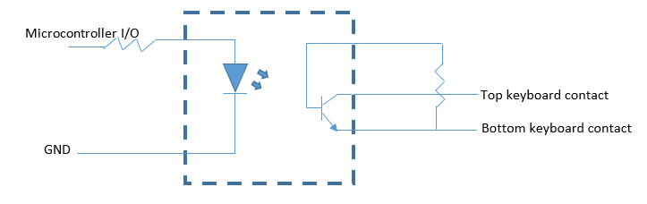

Introduction
We created an auto-batter on the DE1-SOC that would play a cricket simulation game, cricket 07. The game is run on a PC, with the VGA output routed to the FPGA, which performs image processing on the incoming frames, and sends key commands back to the PC. The FPGA AI is capable of soundly defeating the game’s built-in AI.
Figure 1. Video
High Level Design
Rationale
We decided it would be fun to make a game AI, and realized that Cricket 2007 was a simple enough game to play with the FPGA. The game requires well-timed commands from the player, which an FPGA running at 25MHz can easily perfect.
Logic Structure
A high level block diagram that describes the logical structure of the project is shown below.
Figure 2. System Block Diagram
The game is run on a PC, which outputs the game video via VGA. These VGA signals are inputted into high-speed ADCs, which output the digitized color information to the FPGA's GPIOs. THe FPGA then analyzes the images and determines what commands to send to the microcontroller, which uses optoisolators to short contacts on a keyboard to input key commands back on the PC. The image information is saved in RAM on the FPGA, and outputted to a VGA screen.
Hardware & Software Tradeoffs
There were several parts of this lab that could have been implemented in software. The image processing had to be done in hardware, because the on-board ARM processor would have been too slow to analyze incoming image frames, however the ARM could have been used for processing the image metrics that the FPGA found and determining the optimal action to take. In order to speed up compile time (and by extension, development time), we went with a full-hardware implementation rather than use the ARM. It may have also been possible to input key commands through a UART transmission over a USB output from the FPGA to the PC running the game. We could have then had a script running on the PC to accept the UART commands and generate keyboard commands. We ultimately decided to hack an existing USB keyboard, which would directly input USB key commands to the PC. This solution was easier to implement, although it may be less reliable since there is a chance that the leads we attached to the keyboard could come loose.
Hardware Design
Overview
This project required a substantial amount of external hardware in addition to the FPGA hardware. A custom PCB was made for accepting VGA inputs into the FPGA's GPIOs, and several protoboards were laid out for parsing SPI instructions into key commands on a hacked USB keyboard. The FPGA hardware was able to process an image pixel by pixel as it was inputted on the VGA, which allowed us to analyze the image in 24 bit color, even though we could only store 8 bit color in memory. It used color detection for the most part to ascertain several pirces of information such as batter handedness and timing bar position.
Figure 3. Full System, showing DE1-SOC, custom PCB, PIC32, optoisolators, and keyboard
External Hardware
Custom PCB
A custom PCB was made to accept a VGA input, digitize it, and input it into the GPIOs of the FPGA. The ADCs we chose (REF1) were semi-flash ADCs, capable of 100Msps sampling rate, which is sufficiently high to accept 640x480 resolution VGA inputs (~25MHz frequency). The ADCs have a resolution of 8, bits, and three were used, one for each of the R, G, and B signals. Because there is not enough on-board M10k memory on the DE1-SOC to store all 24 bits of color for a frame of resolution 640x480, SRAM chips were also added to the PCB and routed to the DE1-SOCs GPIOs. Three SRAM chips (REF2) were included on the PCB, each with 4Mb capacity, large enough to store 640*480*8=2457600 bits needed to store the color information for one color per chip. A picture of the PCB layout is shown below.
Figure 4. PCB Layout
The PCB also featured a picture of Bruce on the silkscreen, with LEDs on his eyes, shown below.
Figure 5. Bruce as a cyborg
The DE1-SOC has a total of 72 GPIO pins, with four additional ground pins, two 3.3V supplies, and two 5V supplies. The PCB used all 72 GPIOs and all ground and 3.3V pins. The pin allocations are as follows: 24 RGB inputs (ADC outputs), 25MHz ADC clock, HSYNC (from the VGA input), VSYNC (from the VGA input), 19 Address bits for the SRAM (the same 19 bits were used for all three RAM chips), 24 R/W lines to the SRAM, SRAM output enable, and SRAM write enable. It is important to note that due to the 2.5 cycle latency in ADC readings (the ADC architecture is pipelined), the HSYNC and VSYNC signals had to be delayed with shift registers in the FPGA to ensure all VGA signals were synchronized.
In the interest of time, we did not use the external SRAM, but instead stored the 8-bits of color data (as opposed to the 24 bits we get from the ADCs) in on-board m10k memory. This loss of resolution does not affect the image processing algorithms, as they analyze the full 24-bit color information as it is coming in off of the ADCs. 8-bits of color information are then stored in m10k memory, and outputted from the FPGA’s VGA port.
Due to the high frequency of the signals we are passing through the PCB, termination resistors had to be added to each of the signal traces. The below LTSpice simulation shows a 25MHz square wave being passed through a trace with a capacitance of .8pF/cm and inductance of 4nH/cm (approximate values for FR4 PCB material). A 5k load is placed on the output to simulate the SRAM and ADC input impedance. As is evident from the screenshot, the outputted square wave is completely distorted by reflections.
Figure 6. LTSpice simulation, undamped reflections
A termination resistor of 70 Ohms was added at the source of the signal, and cleaned up the output signal greatly, as shown below.
Figure 7. LTSpice simulation, Termination resistors
As a result of our findings, source terminations were added to all unidirectional lines, and termination resistors were added at both ends of the trace for bidirectional lines.
The ADCs require an analog reference voltage, which was set using a voltage reference chip (REF3). The 1.024V output of this chip was passed into an op-amp circuit with high precision resistors, which stepped it down to 0.70V. The VGA standard specifies that the Pk-Pk voltage of analog signals is 0.70V, so setting this as our voltage reference ensured that we made use of the full resolution of the ADCs. An important difficulty we encountered when first passing the VGA signal through the ADCs is that the voltage coming out of the VGA output of the computer was actually about 1.4V. This is because VGA compliant devices have a 70 Ohm termination resistor to ground, which forms a voltage divider with the terminations on the source end of the VGA to step the signal down to 0.7V.
Keyboard inputs
Key commands were outputted by the DE1-SOC via SPI to a PIC32 microcontroller. The microcontroller set I/O pins corresponding to the received command, which drove optoelectronic isolators to short contacts on the keyboard matrix in order to register keystrokes. Although the DE1-SOC could have used its own I/O outputs to drive the optoelectronic isolators, all of the GPIO ports of the DE1-SOC were already mapped to the ADCs or the SRAM on the custom PCB. In order to get the required three pins for SPI (SDO, SCL, SS), the GPIO pin corresponding to the LSB input/output of the SRAM chips was taken. This effectively reduced the color resolution of the image that we could store in the RAM to 21 Bits. We broke open a lab keyboard and attached leads to several of the contacts. The built-in circuit to read from the keyboard matrix and output it via USB was left intact.
Figure 8. High level diagram, keypress circuit
Below is a circuit diagram of the optoisolator circuit. The key matrix on the keyboard is driven on the top set of contacts by a built-in microcontroller, and the voltage on the bottom set of contacts is read in:

Figure 9. Optoisolator Circuit
FPGA
Finite State Machine
In order to decode the incoming frame and store it in the SRAM on the FPGA (Altera example for inferred ram), we had to create a finite state machine that is synchronized to the incoming signal. We did this by researching the VGA timing specification and matching our FSM to the specification (a link to the source that we used can be found here). As it turns out, the website is slightly wrong about the length of the VSYNC back porch – it is supposed to be 33 lines, not 31, as explained on this website. A picture of our FSM is shown below, with a table describing all of the states immediately afterwards. One important consideration is that we delay the entire FSM (specifically, the HSYNC and VSYNC signals) by three cycles, since this is the initial latency on our ADC’s. After that initial delay, it outputs a new value on every clock cycle. Another very important fact is that VGA does not run at 25 MHz – it runs at 25.175 MHz, as mentioned on the previous website. This difference is not significant when driving a monitor it seems, since Altera's Video PLL module generates a 25 MHz clock for driving a VGA screen. However, when decoding the signal, this is not close enough to the standard, and using a 25 MHz clock for decoding will result in a loss of a few pixels at the end of the screen, since the values are not being sampled fast enough. To solve this, the Fractional PLL module was used to generate a precise 25.175 MHz clock, which mostly solved this problem. Due to the small difference in clock speed that is still bound to exist, there is still a small amount of flickering, but it happens so quickly that it is fairly unnoticeable and does not hurt the image too much. To output to the VGA screen, we used Skyler Schneider's VGA driver.
Figure 10. VGA FSM
| STATE | Description |
|---|---|
| STATE_RESET | Wait until a rising VSYNC edge, then reset row_pos and col_pos to 0, as well as the counters used by the FSM, then transition to STATE_BACK_PORCH. |
| STATE_BACK_PORCH | VSYNC Back Porch. Wait for 33 rising edges on HSYNC, to indicate that 33 lines have passed, then an additional 48 cycles for the final HSYNC back porch. |
| STATE_ACTIVE_VIDEO | On each rising clock edge, read in a pixel from the ADC’s and write it to RAM. If col_pos == 639, then end of line is reached, and transition to state STATE_H_FRONT_PORCH and set col_pos = 0. If col_pos == 639 and row_pos == 479, then end of frame is reached, transition to state STATE_RESET. Otherwise, increment col_pos and continue reading in pixels in this state. |
| STATE_H_FRONT_PORCH | Wait for a rising HSYNC edge, then transition to STATE_H_BACK_PORCH |
| STATE_H_BACK_PORCH | Wait for 48 cycles, then increment row_pos and transition to state STATE_ACTIVE_VIDEO. |
Image Processing
In order to effectively play the game, we used a set of modules that perform image detection on various parts of the screen to identify relevant features that allow us to make decisions on what the best course of action is at any given point in time. Roughly, these modules detect the following features: shot timing bar, batter direction detection, and radar presence. Initially, we also implemented other image detection algorithms in MATLAB, but these ended up not being used because the game could be played well enough without the use of these other heuristics. These algorithms include detection of the suggested number of runs that the batter should take, detection of the location of fielders for the purpose of determining optimal shot location, and the detection of the ball location. Detection of the first two of these items was unnecessary because our batter was able to hit the ball so precisely that it would result in a six (the equivalent in a baseball would be a home run, in which the batter effectively does not need to run) very often. Since the ball went out of the park so often, and only rarely caused the batter to get out, it was also unnecessary to implement any detection of the fielders, since they did not even have the opportunity to catch the ball. Detection of the location where the ball lands was created successfully, but, for some reason, reduced the reliability of the program. Thus, for the final implementation, we ignore the location of the ball and simply play a single shot repeatedly, depending on whether or not the batter is left or right handed. As it turns out, the shots that we chose are very versatile and in most scenarios will result in a very good shot. Thus, the image processing involved is fairly simple – it only requires the detection of a few simple regions of the screen, which give us enough information to play the game.
Detection of Shot Timing Bar
In order to assist players, the game has an optimal timing bar that indicates when the player should select their shot. Depending on the skill of the batter and bowler, the size of the optimal region changes size (that is, a worse batter will require the player to more precisely hit the keys on the keyboard to make a good shot). Fortunately, this timing bar has a deterministic location on the screen and is a yellow ball on a black background, making it easy to identify by simply using color. On each frame that we read from the VGA input, we determine the location of this timing bar and check to see if it has exceeded a certain threshold value (which is dynamically modified using a proportional controller) and then send an SPI command to the PIC32 with the desired shot. Originally, we actually checked to see if the current location of the timing bar plus two times the speed of the timing bar (in units of pixels per frame) has exceeded the threshold. The reason we computed the speed of the timing bar is because we thought it takes two full frames before we start the SPI transaction, and so our prediction will be better if we factor in the speed on the timing bar, which varies from bowl to bowl. However, as we realized, this isn’t actually true, since the SPI transaction does not actually take two frames to begin, just two clock cycles (which is negligible) and dt was always zero when we calculated it (since we performed that calculation incorrectly anyways). Thus, this part of the code is irrelevant; we simply compare against the threshold value alone. The PIC32 will then drive the appropriate I/O pins to register a keystroke on the keyboard. Due to non-deterministic latency in how quickly the keystrokes are registered, we then take the actual location of where the timing bar landed when the shot was taken and add a proportional offset relative to the ideal location to the threshold value, so that the next shot is more accurate. This approach seemed to work very well, and resulted in almost perfect shot timing accuracy.
Detection of Batter Direction
In order to select an appropriate shot to play, we must detect the orientation of the batter. To do this, we exploit a deterministic feature of the game – when the bowler has thrown the ball and the timing bar has just begun to move, the batter’s feet are always in the same location on the screen in terms of absolute pixels. If the batter is right handed, this region is slightly to the left of the screen, and if the batter is left handed this region is slightly to the right of the screen. Thus, we can analyze this tiny region and check for the presence of a large concentration of white pixels, since all of the players’ shoes are white. For our purposes, we always choose to play on a pitch type that has very dark dirt, so that the contrast between the white shoes and the pitch type is very clear. This prevents any false detection.
Detection of Radar Presence
In order to detect the presence of the radar, we use a very simple algorithm. The radar is always filled with ten small yellow dots. If, in the region of the screen containing the radar, we detect more than a certain number of yellow pixels that match the same shade as these yellow dots, then we know that the radar is present. The number of these pixels (80) is high enough that it seems to not be confused by any stray pixels in the region that might just happen to be yellow. Detection of the radar is important because it helps synchronize our batting FSM – when the radar is not present, it means that a cut scene is playing, and we should not do anything.
Detection of Ball Location
While this feature was not really used in the version of the project shown during the demo, we did extensive testing to try and see if we could make the batter make more intelligent decision about which shot to play based on where the ball lands rather than just playing the same shot over and over again. Since we spent a significant amount of time on it, it feels worth it to explain our implementation strategy. The location where the ball is going to land is given by a moving blue circle. Once the bowler is locked into a shot, this circle shrinks and stops moving, indicating the precise location the ball will land. Depending on where it lands, and the handedness of the batter, there is a set of optimal shots that can be chosen. In order to detect this circle, we simply wait for the timing bar to start moving, which necessarily means that the blue circle has stopped moving. At this point, we check for a path of blue pixels matching the shade of blue in the circle. We find the maximum and minimum row and column value of this set of pixels, and then take the average of the max and min to find the center of the circle. Based on this, we choose the appropriate shot. Again, for inexplicable reasons, this failed to work properly. We probed the SPI output from the FPGA and it was sending the expected data to the PIC32. After that, it seems that the PIC32 failed to drive the correct keyboard buttons, which makes little sense given that it had no problem making the right keystrokes with different FPGA code, which is entirely separate from the PIC32.
Batting Finite State Machine
Given the three main image detection modules above, we can now integrate all of them into a finite state machine that describes the system. Note that the batting FSM only runs when the VGA FSM is in state STATE_BACK_PORCH, since this is after the entire frame has been read in, and all necessary computation has been performed.
Figure 11. Batting FSM
The following table describes what each state does:
| STATE | Description |
|---|---|
| BAT_RESET | Reset the FSM. Wait until the radar is detected and the timing shot bar has started to move, and then transition to state BAT_CALCULATE. |
| BAT_CALCULATE | This state is actually not needed, go straight to state BAT_WAIT_FOR_IDEAL. |
| BAT_WAIT_FOR_IDEAL | Wait until the timing bar has reached the ideal location, which occurs when the timing bar location is greater than or equal to the threshold value, then transition to state BAT_EXECUTESHOT. |
| BAT_EXECUTESHOT | Decide on which shot to play based on batter direction, start the SPI transaction, then immediately transition to state BAT_THRESHOLD. |
| BAT_THRESHOLD | Clear the SPI start signal, and then immediately transition to state BAT_AFTERSHOT. |
| BAT_AFTERSHOT | Wait here until the radar has either disappeared, or the timing bar has been reset to its stationary value, then transition to state BAT_RESET to restart the batting process. |
SPI Communication Between FPGA and PIC32
Once the FPGA decides on a shot, it sends it to the PIC32 via SPI. We used GPIO_0[2] for MOSI, GPIO_0[16] for CLOCK, and GPIO_0[28] for slave select. An SPI module was implemented manually to deal with the communication, rather than using the Altera SPI module that interfaces through the NIOS. This decision was made because adding a NIOS would increase our compile times significantly, and would reduce our ability to rapidly test. SPI was implemented to run at approximately 1 MHz, since we toggle the SPI clock approximately every 12 cycles of the VGA Clock, which runs at 25.175 MHz. This results in a 24 cycle (at 25.175 MHz) distance between rising edges of the SPI clock. SPI was implemented for 8-bit data, an idle low clock, the FPGA master sending data on the rising edge (and sampling on the falling edge for the PIC32), and slave select enabled. An FSM for the SPI module is shown below:
Figure 12. SPI FSM
| STATE | Description |
|---|---|
| If the RESET input to the module is high, set SPI clock low, SS high, numSent to 0, without consideration for what state the FSM is in, and set the state to STATE_RESET. | |
| STATE_RESET | When the START input to the module is high, set SPI Clock, SS low, data to the input data to the module, and numSent to 0, then transition to STATE_WAIT_24 |
| STATE_WAIT_24 | Wait for 24 cycles with the SPI clock low, then go to state STATE_SEND. |
| STATE_SEND | If numSent < 8, then set MOSI = data[7-numSent], increment numSent, set SPI Clock high, then transition to state STATE_WAIT12HIGH. Otherwise, set SS high and transition back to state STATE_RESET. |
| STATE_WAIT12HIGH | Wait for 12 cycles with the SPI Clock high, then transition to state STATE_WAIT12LOW |
| STATE_WAIT12LOW | Wait for 12 cycles with the SPI Clock low, then transition to state STATE_SEND. |
Errata
As mentioned previously in the report, not everything was perfect (though we were still able to beat the game when playing at four star difficulty). One strange error was that we could not get the FPGA to correctly decide between multiple shots correctly. We thoroughly tested this version, and found that the FPGA sent the correct SPI signals, but the PIC32 either did not decode them correctly or they were sent too late for some reason (even though the time at which they are sent never changed in our modifications). Thus, we decided on just using a single shot for each batter type (left or right handed). Another interesting error is that for the chosen left handed shot, which should only drive the shift, s, and left keys on the keyboard, also drives the up key as well (this isn’t a problem, since it is still a valid shot, and quite a good one in many scenarios). A guess as to why this occurs is that when wiring up the keyboard, we accidentally shorted the up and left traces in the keyboard dot matrix, causing them to be driven together. We checked if this were the case, and while it seems to not be the issue, we can’t think of anything else that would cause this, since SPI was verified to be working correctly.
Another interesting piece of information is that we burned out several GPIO pin on the FPGA. Originally, we had used all the pins on the board for the ADC’s and external SRAM, but since we were not using the SRAM we decided to use the LSB data line from each SRAM for SPI. Unfortunately, we forgot to disable the SRAM before doing this and burned out a GPIO. Lesson learned – add a 200 ohm resistor on the pin next time.
Software Design
All of the software for this project was written on the PIC32 microcontroller. It accepted SPI commands from the FPGA, and set digital outputs accordingly. In order to emulate a single key press, it would raise a given output high, hold it for 50ms, then lower it.
Results
For results, it is best to view the linked video on this page. In terms of the ability to play the game, the system is able to beat the game’s AI when playing on four star difficulty using a good team in the game, such as England. According to Tahmid, one of the group members who has been playing the game for many years, it plays substantially better than he does or any human could. With respect to the VGA decoding, it was mostly accurate after modifying the VGA clock to run at 25.175 MHz instead of 25 MHz. There was still a little flickering, but it was not too distracting. Safety was enforced in our design by default – there’s nothing particularly dangerous involved in our project. The project is fairly usable by anyone, and just requires someone to plug in our hardware (and opened up keyboard) to a computer and then run the game on the computer. The speed of execution is very good – we do all of the image processing for all the modules in parallel as pixels come in, which means that we are able to make decisions on each and every frame. Thus, we analyzed the game at the highest possible frequency that we could, which makes our system a very effective controller for the game.
Here is an image from the game where we win on four star difficulty, playing as England against India (two evenly matched teams). The game’s AI scored 27 runs in 5 overs. We scored 30 runs in 7 balls (just a little bit more than 1 over), which means that we beat the AI by an extremely wide margin.
Figure 12. #Winning
Conclusions
Overall, we are very happy with the outcome of the project. While there were some bugs in the code (mentioned in the errata section), it was still able to play the batting phase of the game automatically and beat teams on even four start difficulty. In addition to learning even more about Verilog, we also learned a lot of about hardware, including how the VGA standard works, high frequency PCB design, and even hacking open a keyboard and understanding how the internal dot matrix can be used to manually input keystrokes. Based on the results of our implementation, it seems that we were able to implement hardware and software that can effectively decode VGA signals, and therefore conforms to the VGA standard. We also bit banged SPI using our own custom Verilog module, and complied well enough (though probably not completely perfectly) with the SPI standard in our implementation so that the PIC32 and a signal decoder could correctly determine what the FPGA was sending. If we were to do this again, we would try and use the external SRAM that we put on our PCB so that we could output full 24-bit color, as opposed to the 8-bit color that we were able to store on the FPGA with inferred RAM, as well as work out some of the previously mentioned bugs. While it was a very challenging project, we are glad that we decided to do it.
Intellectual Property Considerations
We used the Altera PLL module to generate the 25.175 MHz clock, which is the VGA standard frequency and the frequency at which we run our finite state machines. We used the Terasic System Builder to generate our top level module with the appropriate Code that we used from other sources include Skyler Schneider’s VGA driver (linked above in the VGA section) and example VGA code (https://people.ece.cornell.edu/land/courses/ece5760/DE2/indexVGA.html) from the ECE 5760 course website.
Legal Considerations
As far as we are aware, there are no legal implications of our project.
Appendices
A. Source Code
- AutoBatter.zip (17.6 KB)
B. Labor Division
Manish Patel worked on the image detection algorithms, VGA decoder, and PIC32 code. Matthew Filipek worked on the PCB and VGA decoder. Tahmid worked on the keyboard circuit and PCB